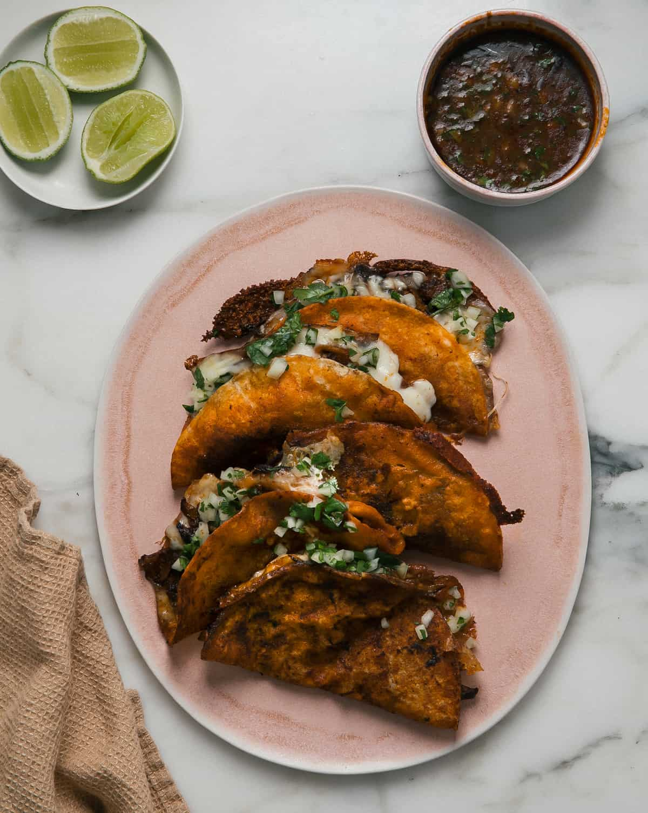

Birria Tacos

Authentic Birria tacos are tender, flavorful Mexican tacos made with
slow-cooked beef, rich spices, and melted cheese, served with a side of
savory consommé for dipping.
Ingredients
- 3 pounds beef chuck roast, cut into chunks
- 4 dried guajillo chiles
- 2 dried ancho chiles
- 1 white onion, quartered
- 5 garlic cloves
- 2 tablespoons apple cider vinegar
- 1 teaspoon cumin
- 1 teaspoon oregano
- Salt and pepper to taste
- Corn tortillas and shredded cheese for serving
Instructions
- Soak the dried guajillo and ancho chiles in hot water for 15 minutes until softened.
- Blend the chiles with onion, garlic, vinegar, and spices to make the Birria sauce.
- Marinate the beef chunks in the sauce for at least 1 hour (overnight if possible).
- Cook the beef on low heat until it becomes tender and easy to shred.
- Warm up corn tortillas and dip them lightly into the Birria broth.
- Fill each tortilla with shredded beef and cheese, then pan-fry until golden and crisp.
- Serve the tacos with a side of consommé for dipping and enjoy!
More Birria Taco Recipes
If you want to try other versions of this delicious dish, check out these recipes: